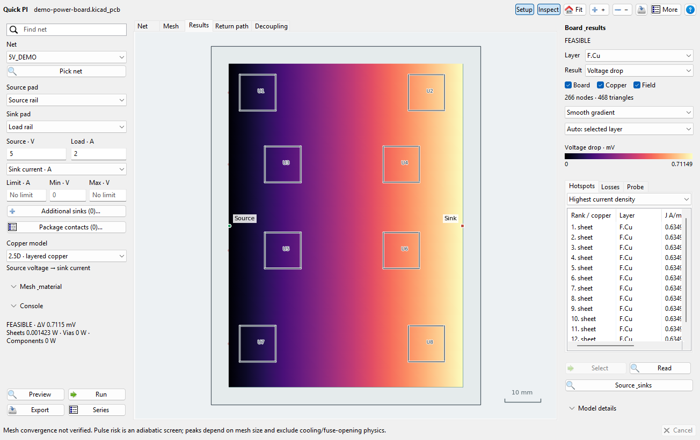
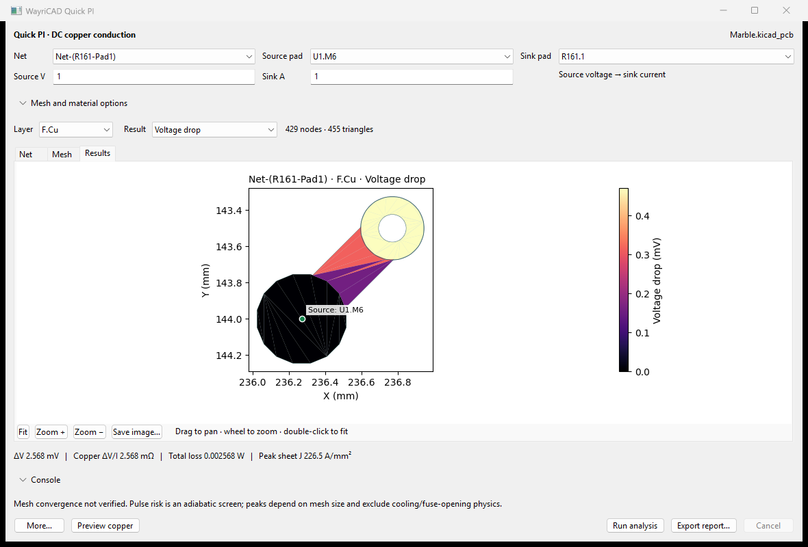
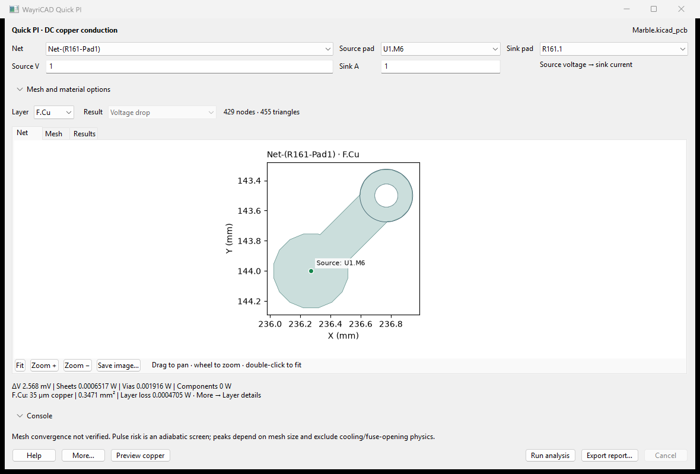
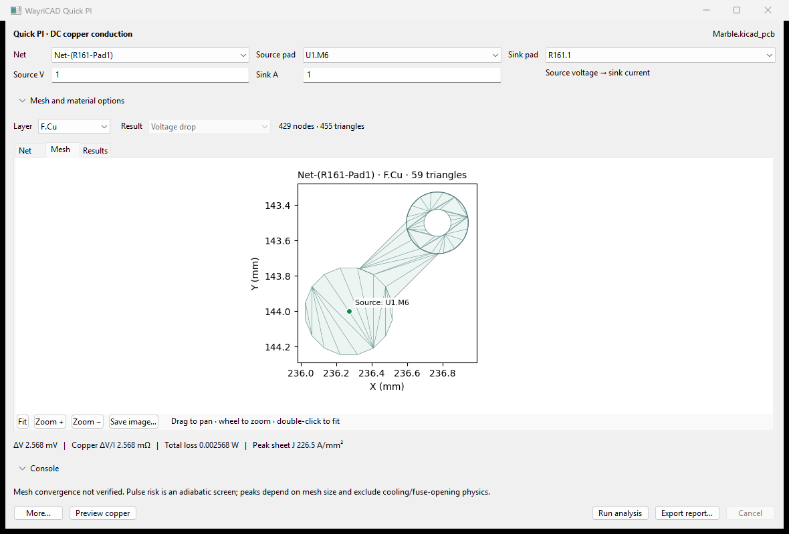
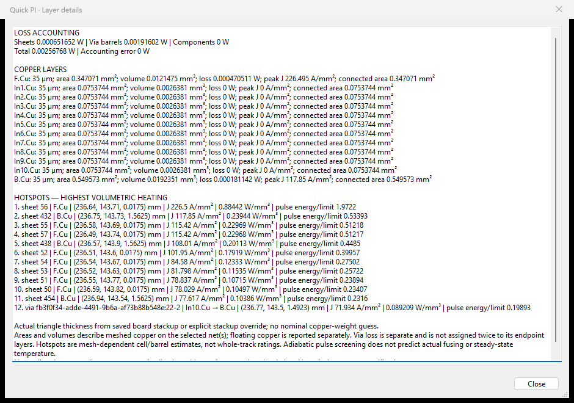
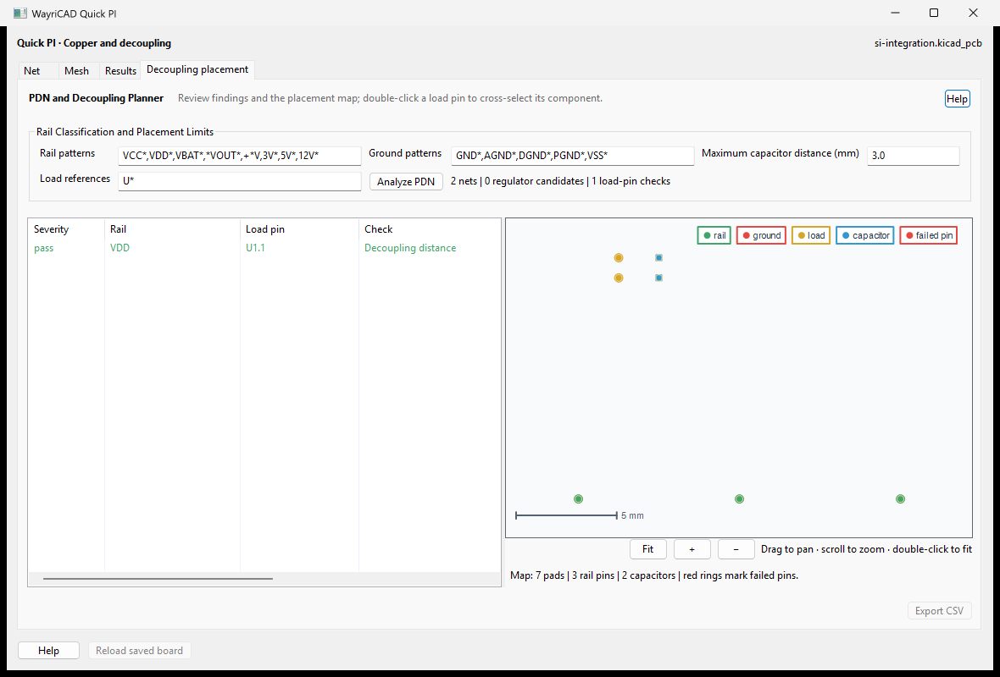
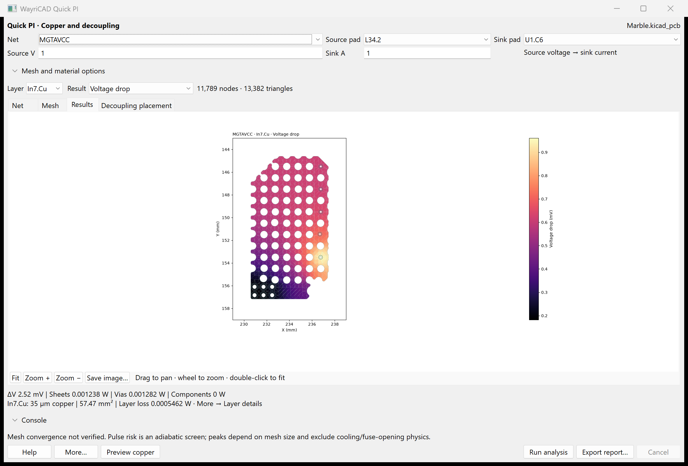
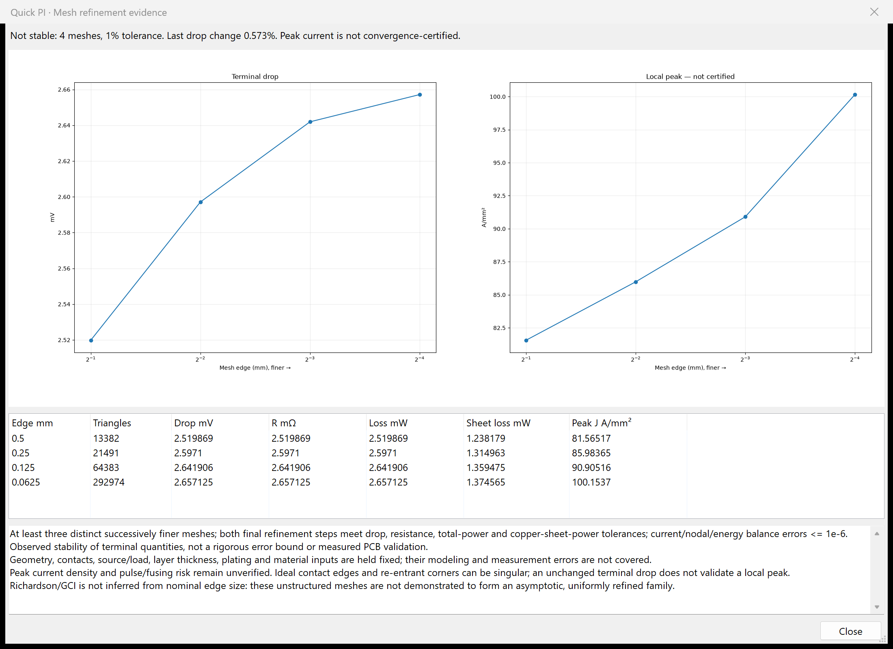

Run a path · Previews · Layer details · Series editor · Board screens · Transient · Electrothermal · Console · CLI · Troubleshooting
Quick PI estimates voltage drop and current flow through saved traces, filled zones, pads and plated via barrels. The default 2.5D · layered copper model solves DC conduction locally and leaves the PCB unchanged. To solve copper volume, choose one net, two distinct pads and a specified sink current; select 3D · copper volume under Copper model, then click Run 3D. The first run prepares Gmsh in the private runtime if necessary. Use Mesh & material to set mesh edge, assumed via plating, fixed copper temperature and the tetrahedron budget. The result window has board top and 3D views, layer/via filtering, current density, voltage and loss density. Plotted cells are sampled for speed; exported JSON includes the complete mesh and field. CLI --model-dimension 3d runs the same model. These copper modes do not solve AC fields, transient inductive behavior or thermal feedback. Separate studies provide explicit lumped R/L/C transients and electrothermal coupling. Regular layer maps remain 2.5D; the 3D export provides a separate interactive HTML view and complete JSON.
The window opens maximized. Setup on the left holds the net, pads, source and load inputs, with Preview, Run, Export and Series at the bottom. Inspect on the right holds the layer, result, calibrated colour range and exact probes. The board uses the full height between the compact header and status line, without graph axes.
Click Setup or Inspect in the header to hide either side panel. Drag to pan, use the wheel or + / − icons to zoom, and double-click or click Fit to restore the whole board. A millimetre ruler shows the current scale. Board, Copper and Field independently control the saved context, extracted copper and result overlay. The save-image icon exports the visible board canvas. Mesh & material, Console and Model details start folded; expanding them scrolls the sidebar. More contains transient, electrothermal and diagnostic studies.

UI demonstration: a uniform 65 × 90 mm, 35 µm copper plate with full-height edge contacts at 5 V / 2 A gives 0.71149 mV. The saved PCB is context for this analytical fixture; its illustrated traces are not the solved plate model. This is not a measured-board result.
The primary sink uses Load · A, Min · V and Max · V. Additional sinks opens an editable table for other distinct pads on the same net, with current demand and optional voltage bounds. Use Add sink, Update selected or Remove selected, then OK to apply. Blank minimum defaults to 0 V; blank maximum is unbounded. The source pad cannot be a sink.
Limit · A is a nonnegative current budget; blank means unlimited and zero supplies no current. All constant-current demands are solved together at the set source voltage. FEASIBLE means total demand fits the source budget and sink voltages meet their bounds. It does not establish thermal, transient or hardware qualification. INFEASIBLE identifies failed requirements and retains source current headroom and each sink's diagnostic voltage/drop.
Source overload maps are requested-load diagnostics. A source whose current limit is below demand cannot sustain the calculated operating point. The tool does not scale loads, simulate regulator foldback or solve voltage-collapse dynamics. Worst drop / total demand and the multi-sink drop/current map are diagnostic normalizations, not physical two-terminal resistance. Changes to any load or bound clear old results. Additional sinks and explicit console series components cannot be combined; the single-sink series path still accepts the visible source current and sink voltage limits.

Screenshot scope: Berkeley Marble's small Net-(R161-Pad1) connection, U1.M6 to R161.1, at 1 V / 1 A. This is not a power-rail or full-board loading test. Computed drop is about 2.568 mV: 0.652 mW in sheets and 1.916 mW in via barrels. It is a regression result, not a physical measurement or mesh-convergence certificate.
| View | Purpose |
|---|---|
| Net | Check actual copper, terminals and drill holes before interpreting results. |
| Mesh | Inspect triangle resolution, narrow necks and contact boundaries. |
| Results | Choose absolute voltage, drop, current density, current-flow arrows, loss density, pulse screen or DC drop/current. |


Open More → Transient load-step study. Set the shared source R/L, each load-path R/L, local capacitor C/ESR, before/after current and step time. Capacitance and shared source resistance require explicit entry; no L/C is inferred from PCB geometry. Units are SI: 100 µF is 100e-6 F. Run transient opens raw voltage/current time plots and Checks / limits. Export HTML / JSON retains all inputs and samples. Input or saved-source changes require a new run.
The separate lumped network starts in pre-step DC equilibrium and uses backward Euler with a half-step comparison, charge and energy accounting. Exact event timestamps retain before/after samples for ESR jumps. Refine the time step to assess waveform accuracy. Source current limits remain budget diagnostics; no regulator CV/CC, foldback or control loop is simulated. These are load-node traces, not transient PCB field maps. Use the illustrative input with wayricad-pi --transient transient-load-step.json --html pi-transient.html --output pi-transient-data.json; replace its values with your actual circuit. An optional positional PCB supplies saved-file provenance only. Exit 4 reports a limit violation.
Open More → Electrothermal study. Choose Steady saved-board coupling or Transient lumped coupling. The explicit model editor starts from the selected electrical settings. null marks a missing physical input. Load study JSON, review its materials, cooling and heat mappings, then Run electrothermal. Coupled results shows sink voltages and temperatures; Checks and solve actions retains convergence, energy balances, limits and reasons for a stopped solve. Changed inputs clear old results. Cancel run discards partial work.
Steady coupling needs a saved explicit stackup, closed Edge.Cuts, dielectric/copper conductivity, via plating, convection/emissivity and a reviewed material temperature range. Planar and via Joule losses heat matching thermal cells; the returned conductor temperature changes local copper resistance. Cold/hot voltages and raw layer fields are retained. Explicit series branches require contact polygons; their resistance remains fixed in this mode. Delivered load power is not automatically PCB heat. Missing cooling, uncovered sources or unsupported narrow grid geometry block the solve with a diagnostic.
Transient coupling needs explicit source/path R/L, C/ESR, thermal R-theta (K/W), C-theta (J/K), initial temperatures and power steps. Map each nonzero resistor exactly once to a thermal node and declare its reference temperature/coefficient and validity range. Electrical and thermal states persist across accepted intervals. Only resistive dissipation heats nodes; reactive storage and numerical damping do not. Review both integration and exchange refinement checks. This is a lumped model, not a spatial transient field.
Export HTML / JSON retains assumptions, source/study hashes, raw results and checks. Changed saved sources block export. Source current budgets remain diagnostic; no CV/CC or foldback is simulated. Temperature caps, invalid material ranges and exhausted coupling iterations produce no valid hot operating point. Quick PI vendors the shared QuickTherm kernels and works independently of a QuickTherm installation. Steady coupling rejects unplated drilled holes, plated slots and backdrills; plated drill-core cavities remain unresolved by its uniform-grid approximation. See complete model and CLI reference, steady example and transient example. CLI: wayricad-pi --electrothermal study.json --html coupled.html --output coupled-data.json; optional positional PCB supplies saved-board geometry when the study uses electrical selections. Exit 3 means incomplete coupling; exit 4 means an operating limit violation. Illustrative examples are assumed models, not measured-board validation.
Smooth gradient is the default result display and stays continuous when zooming. Voltage, drop and transfer resistance use the linear solved nodal field. Density, flow, loss and pulse risk use area-weighted cell interpolation for display within the same layer and copper thickness. Holes, disconnected islands and unavailable cells remain uncolored. Probes, hotspot rankings and automatic scale peaks retain solver values. Choose Solver cells to inspect the original cell resolution. Smoothing does not refine the analysis mesh; exported maps and JSON retain the display choice.
Drag to pan, scroll to zoom and use Fit to restore the extent. More → Zoom to circuit terminals focuses the chosen pads. More → Refine mesh and rerun halves the edge length. Compare resistance and peak density across refinements; localized peaks can remain sensitive after total resistance stabilizes.
With the optional Gmsh Python package installed in the Quick PI runtime, extracted planar copper and contact regions use a conforming Gmsh mesh. Otherwise the VTK mesher runs. Both feed the same 2.5D DC solver, and the mesh report records the backend. The CLI accepts --mesh-backend gmsh or --mesh-backend vtk to require either backend.
Resize the divider to give the copper viewport or inspector more space. Board context, copper geometry and the result overlay can be switched independently. Context comes from the actual saved board geometry; it is display-only and does not expand the solved electrical scope.
The inspector ranks local current density and volumetric heating under Hotspots. Select a row to switch layers, mark the solved location and zoom there. Click solved copper in Results to inspect the containing triangle or plated barrel under Probe. Empty space and drill holes have no copper result. Heating rankings use W/mm³; the loss map uses W/mm². These are mesh cell/barrel estimates, not whole-track measurements. Losses retains thickness and loss accounting.
Choose an automatic scale for the selected layer, a shared scale across all solved layers, or manual limits in the displayed units. Minimum must be below maximum; changing the metric resets manual limits. A manual range can clip values. Exported HTML/JSON retain the chosen scale mode.
Select object in PCB navigates only through exact saved object identities where available; Select source and all sinks in PCB selects the reviewed pads. Read PCB selection brings a selected track, pad or via into the inspector. Objects outside the current DC model show no invented electrical values. A local mesh cell index is not a KiCad UUID. Saved-file changes block navigation/export until reload and rerun; live unsaved changes are outside the saved analysis snapshot. These layer-map results remain 2.5D DC conduction with the documented contact, material and mesh limits.
Copper thickness comes from each saved stackup layer, not a nominal copper-weight guess. It controls conductance and copper thermal mass. Missing or ambiguous stackup data stops the run. Via plating defaults to an assumed 25 µm and is separately configurable.

The detail window lists layer area, volume, connected area, thickness and peak current density, then ranked local heating hotspots with XYZ locations. Sheet, via-barrel and component losses are separate. Floating copper remains in geometry area but has no connected loss result. The HTML report includes these details.
For one sink, ΔV/I is the solved path resistance for linear copper/RL paths; for multiple sinks, worst drop / total demand is a diagnostic ratio. With a diode or fixed drop it is an apparent ratio at the requested current, not resistance. Source V/I describes the operating point and is not copper resistance. Sheet current is A/mm; current density is A/mm². The pulse screen compares deposited energy with energy to reach the entered temperature limit without cooling. A ratio above one is not a fuse-time prediction. Heat spreading, temperature feedback, melting and fuse-opening physics are excluded.
Choose Build series path… to select source and sink pads and add compatible two-pad components in order. You can import one or two selected pads from the PCB Editor that launched Quick PI. Confirm their source-to-load order. Each component needs an explicit resistance/RL, fixed drop or diode model; the editor checks saved-net continuity and can save or load its JSON path.
The default mode prescribes current. Resistive load solves a positive DC current from source voltage, path losses and an entered load in ohms. More → DC current sweep plots path drop and sink voltage over 2–200 positive, prescribed currents. These are fixed-temperature DC calculations, not waveforms or electrothermal feedback.
Choose a routed signal and its real return net(s). Refill zones and save first. The view marks sampled gaps in adjacent filled copper and checks for selected return vias near evidenced layer transitions. A clear screen cannot prove current flow, impedance or plane continuity. Method and limitations.
Expand Console. Use help, nets, or pads <net>. Tab cycles completions; Up/Down recalls commands. This is a bounded command interface, not Python or a shell.
run pi "Net-(R161-Pad1)" U1.M6 R161.1 run pi U1.M6 R161.1 5m R161.2 U1.M5 run pi U1.M6 R161.1 5mH+30m R161.2 U1.M5 run pi VIN.1 D1.1 1V D1.2 LOAD.1 run pi VIN.1 D1.1 diode(Vf=0.7V,Iref=1A,n=2,T=25C) D1.2 LOAD.1
Values in the last two examples are explicit user assumptions for that component: 5 mΩ, or 5 mH plus 30 mΩ. They do not identify the actual fitted R161 automatically. Inductance adds no steady-state DC voltage drop; stored magnetic energy is reported. Component links are dashed, not invented PCB tracks. Source voltage/current and material settings use the visible controls.
Engineering notation supports milli m, mega M/Meg, u/µ, n, p, scientific notation, and explicit H/ohm/Ω units. Pads such as C1.1, U8.2 and Q2.3 must resolve unambiguously.
1V or 500mV gives a deterministic forward drop. diode(...) evaluates an ideal diode equation at the specified DC load current using a user-entered Vf/Iref anchor, ideality n (1–4), and temperature in °C. Choose the two pads in forward source-to-load order. Each result includes current, forward drop, voltage before/after and power. No fitted component model is inferred. Prescribed-current mode does not infer current from source voltage; resistive-load mode does. Neither solves reverse bias or an instantaneous waveform. If the requested current would leave a negative sink voltage, the UI warns that the operating point may be infeasible. Forward-drop paths must cross each net once so the selected part has no alternate bypass path.
Install the suite wheel for wayricad-pi. From a source checkout use python -m quick_pi_plugin.cli instead.
wayricad-pi --help wayricad-pi board.kicad_pcb wayricad-pi board.kicad_pcb --net "Net-(R161-Pad1)" --source U1.M6 --sink R161.1 --voltage 1 --current 1 --mesh-edge 0.5 --pulse 1 --temperature-limit 150 --html pi.html wayricad-pi board.kicad_pcb --command "run pi U1.M6 R161.1 5mH+30m R161.2 U1.M5" --html series.html wayricad-pi board.kicad_pcb --net +3V3 --source J1.1 --voltage 3.3 --source-current-limit 2 --load U1.1 0.8 --load U2.1 0.6 --load-voltage-limits U1.1 3.1 3.4 --load-voltage-limits U2.1 3.0 - --html multisink.html
Repeat --load PAD CURRENT_A instead of --sink/--current. Optional --load-voltage-limits PAD MIN_V MAX_V applies to a matching load; use - for an omitted bound (minimum defaults to 0 V; maximum is unbounded). --sink-min-voltage/--sink-max-voltage set bounds for legacy single-sink or series --command paths. --source-current-limit accepts a nonnegative ampere budget and also works with legacy single-sink/series paths. --load cannot combine with --sink, --current or --command. Exit 4 means the source budget or a sink voltage requirement is infeasible, and takes precedence over convergence status. Diagnostic results and reports remain available.
The board-only command lists nets/pads/layers. Replace sample names with those on your board. Mesh edge and plating are mm; pulse is seconds; temperatures are °C. Without a CLI pulse duration, thermal screening requests one. HTML requires a completed solve, sweep or return-path review. Exit 0 means execution succeeded, not that the electrical design or convergence passed.
Triangle-angle improvement preserves copper, holes and terminal boundaries. Broad complex planes receive interior mesh points to reduce unnecessary subdivision. Geometry and conservation checks and the mesh-size budget remain enforced. Compare resistance and localized current density separately across refinements.
| Problem | Action |
|---|---|
| Missing stackup | Save explicit copper/dielectric thicknesses in Board Setup. |
| Unfilled zones | Refill and save in KiCad. |
| Disconnected terminals | Check pad/net selection, actual copper continuity and filled contacts. Cross-net paths need explicit series components. |
| Mesh budget or timeout | Use a larger mesh edge or smaller net, then refine gradually. |
| Dependency setup | Read the reported setup log; check KiCad 10 Python and package-mirror/proxy/offline-wheel configuration. |
| Wrong/stale project | Save and launch from the intended PCB Editor. Each action retains that editor's IPC connection. |
All screenshots and help assets are bundled locally. Numerical dependencies are prepared in a private user cache; the first setup may need network access. A complete KiCad 10 installation is required. KiCad 11 live operation is not certified.
The Decoupling placement tab incorporates PDN and Decoupling Planner: rail/ground/load patterns, capacitor qualification, proximity checks, regulator candidates, placement map and CSV findings. It uses the same saved board; More → Reload saved board refreshes it. These placement heuristics do not constitute AC PDN simulation and do not move components. Detailed placement help.


Actual copper from L34.2 to U1.C6, with a hypothetical 1 A single-pad sink: the pictured 0.5 mm mesh gives 2.520 mV. Refinement to 0.0625 mm gives 2.657 mV. The final drop change is 0.573%, but the preceding step and sheet-loss stability fail the two-step 1% criterion. Peak current density remains unconverged. This is not a distributed FPGA-load or regulator model.
Run wayricad-pi --verify --output pi-reference-results.json for eight known-answer cases: straight/parallel conductors, a plated via, the published Elmer beam/circuit operating point and radial annulus refinement. Passing these verifies those models; it is not a measured-board validation.
Choose More → Check mesh convergence for 3–5 meshes, halving the requested edge at each step. Both final steps must meet the tolerance (default 1%) for drop, resistance, total and sheet loss, with conservation checks. The plot separates terminal drop from local current peaks. Budget/geometry failure means INCOMPLETE. Peak-current and fusing-risk convergence remain unverified.

CLI: add --converge-levels 4 --convergence-tolerance-percent 1 to a solve. JSON and HTML retain the study; exit 3 means incomplete or not stable, exit 2 means execution failed. A stable result is not a rigorous error bound.
Install the WayriCAD CLI wheel alongside the GUI plugins. In the saved project folder, run wayricad jobs init --preset inventory, then wayricad jobs run --keep-going. Reports, logs and a linked HTML summary go into a fresh reports/wayricad/ run folder. Inventory lists available nets and paths; choose the electrical preset and explicit terminals for numerical analysis.
Use wayricad jobs jobset --output analysis.kicad_jobset to create a native KiCad jobset. Use --merge existing.kicad_jobset --position 1 to insert into an existing sequence, writing a new file. Open the resulting jobset in KiCad's Jobsets manager and run it. Nonzero tool exits and missing reports fail the sequence; successful execution is not engineering approval. Complete setup, presets and automation guide.
Use Find net to filter names, or Pick net to click a saved pad, track or via and choose its net. Choose the terminals and rerun after input changes.
Hover over Results cells to read exact values; click to pin, and Ctrl-right-click to clear. Missing cells and holes remain gaps. The 3D copper dialog supports orbit, pan, wheel zoom and sampled-cell probes. Export 3D report writes an offline interactive HTML view and complete JSON. HTML controls: drag to orbit, Shift-drag to pan, wheel to zoom, Fit to restore, click to pin and Clear probes to remove pins. This moves the display only; the PCB and solver are unchanged. Planar reports provide interactive maps alongside static print figures.
The 3D display is sampled solved copper, not STEP component solids.